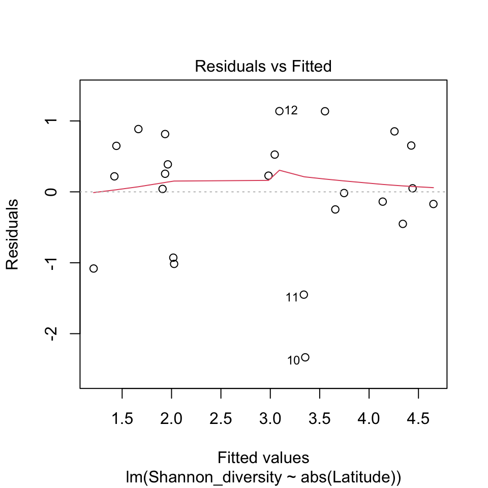

Fitting lines to bivariate data
We very often find ourselves with sets of bivariate data: two separate variables have been measured for each thing we’re interested in. This might be genetic variability and distance from another population, it might be nutrient intake and immune response, it might be height on a mountain and the size of a plant, or it might be any number of combinations of variables. Quite often in these circumstances we are interested in the effect that one variable (often called the independent variable) has on another (the dependent variable). Sometimes we find complex relationships between variables that have to be described by some form of curve, but sometimes we are lucky and there is a simple relationship between the two which we can describe with a straight line. In this latter case we can use a type of linear model where instead of relating our response variable to a factor with discrete levels, as you saw when we were looking at ANOVA, we use a continuous explanatory variable. This lets us describe the relationship in terms of the slope and the intercept of the straight line which best describes how the dependent variable changes with the independent variable. This form of analysis is often called linear regression and the basics are explained in this video:
Example: tree diversity and latitude
Let’s work though an example of a linear regression. The Latitude_diversity data set contains data on tree diversity from 24 forest plots in locations ranging from the tropics to northern Europe and the USA1. One of the measures we have for each plot is the Shannon diversity index, a measure of the overall diversity of trees present, and another is the latitude of the plot. Let’s have a look at these data with a scatterplot.
We’ll use the absolute value of latitude because some values are negative if the plot is South of the Equator, but the pattern we’re interested in is how diversity changes with distance from the equator.
diversity <- read.csv("https://github.com/rjknell/Linear_models/raw/master/data/Latitude_diversity.csv")
plot(Shannon_diversity ~ abs(Latitude),
data = diversity,
pch = 16,
col = "aquamarine4",
ylab = "Shannon diversity",
xlab = "Absolute latitude")
Figure 1 Shannon diversity for trees plotted against latitude for 24 forest plots
As you can see the Shannon diversity index decreases with increasing latitude, and just from looking at these data we can see that they might be suitable for linear regression analysis. We have a clear potential direction of causality (diversity does not cause latitude but latitude might cause diversity), the relationship is not obviously different from a straight line and the data don’t have any obvious skew, outliers or other weirdness.
If we want to find the line that best allows us to predict the Shannon diversity of a patch of forest from its latitude, we can fit a linear regression using the lm() (for linear model) function with a formula specifying exactly what we want the function to fit, much as we’ve seen for ANOVA and also for plotting data — in fact the formula we’ll use with lm() here is exactly the same as the one we used to generate the plot. We have the response variable (AKA the dependent variable), then a tilde (~), the symbol which means “as explained by” in an R formula, and then the explanatory variable, AKA the independent variable. If both are in the same data frame we can use the data = argument to tell R where to look. To fit a linear model to these data, therefore, we can use this code:
L1 <- lm(Shannon_diversity ~ abs(Latitude), data = diversity)
L1
Call:
lm(formula = Shannon_diversity ~ abs(Latitude), data = diversity)
Coefficients:
(Intercept) abs(Latitude)
4.81587 -0.07408 Just inputting the name of the fitted lm() object returns the formula and the model coefficients. The first one, labelled Intercept is the y-intercept, or the predicted value when the explanatory variable is zero. In this case the intercept corresponds to the predicted Shannon diversity at the equator, which is 4.82. The second one, labelled with the name of the explanatory variable is the slope of the relationship, or in other words the amount by which we predict the Shannons diversity index to change with every degree of increase in latitude. Putting these into the equation of a straight line we get:
\[ y = -0.0741 \times |latitude| + 4.82\] and we can draw this onto our scatterplot using the abline() function.
plot(Shannon_diversity ~ abs(Latitude),
data = diversity,
pch = 16,
col = "aquamarine4",
ylab = "Shannon diversity",
xlab = "Absolute latitude")
abline(
a = 4.82,
b = -0.0741,
lwd = 1.5,
col = "aquamarine4"
)
Figure 2 Shannon diversity for trees plotted against latitude for 24 forest plots with a line fitted from a linear regression
Is the line a good fit to the data? It’s not perfect of course because there’s a fair amount of noise in these data but just from looking at it we can see that it’s going to be difficult to find anything better. Is the slope of the line significantly different from zero?
1: Originally published in LaManna, J.A., Mangan, S.A., Alonso, A., Bourg, N.A., Brockelman, W.Y., Bunyavejchewin, S., Chang, L.-W., Chiang, J.-M., Chuyong, G.B., Clay, K., Condit, R., Cordell, S., Davies, S.J., Furniss, T.J., Giardina, C.P., Gunatilleke, I.A.U.N., Gunatilleke, C.V.S., He, F., Howe, R.W., Hubbell, S.P., Hsieh, C.-F., Inman-Narahari, F.M., Janík, D., Johnson, D.J., Kenfack, D., Korte, L., Král, K., Larson, A.J., Lutz, J.A., McMahon, S.M., McShea, W.J., Memiaghe, H.R., Nathalang, A., Novotny, V., Ong, P.S., Orwig, D.A., Ostertag, R., Parker, G.G., Phillips, R.P., Sack, L., Sun, I.-F., Tello, J.S., Thomas, D.W., Turner, B.L., Vela Díaz, D.M., Vrška, T., Weiblen, G.D., Wolf, A., Yap, S. & Myers, J.A. (2017) Plant diversity increases with the strength of negative density dependence at the global scale. Science, 356, 1389–1392.
Testing for significance
We’ve fitted our best fit line using a linear regression. Now we would like to determine whether our line is significantly different from one with a slope of zero (in other words, is the effect of latitude on diversity significant?). This video explains how to do this by partitioning variance and constructing an ANOVA table:
As we saw in the video, fitting a linear regression involves partitioning variance in a very similar way to an ANOVA with a factor as an explanatory variable, and just like an ANOVA we can carry out an F-test to see if the amount of variance explained by our fitted model (the treatment variance or the treatment MS) is greater than that which is unexplained (the error variance or MS error, or as R labels it the residual variance). Using the anova() function on our model will generate an ANOVA table just like the one we saw when we looked at single factor ANOVA.
print(anova(L1))Analysis of Variance Table
Response: Shannon_diversity
Df Sum Sq Mean Sq F value Pr(>F)
abs(Latitude) 1 29.327 29.3267 37.67 3.54e-06 ***
Residuals 22 17.127 0.7785
---
Signif. codes: 0 '***' 0.001 '**' 0.01 '*' 0.05 '.' 0.1 ' ' 1This is calculated in the same way as the ANOVA table for a single factor ANOVA, except that instead of calculating the SS error (or the Residual Sum of Squares as R calls it) by subtracting a group mean from each data point we subtract the predicted value of the fitted line: so if we have a data point which has a latitude of 9.15 and a Shannon diversity of 4.0 (This is Barro Colorado Island, Panama in our data) the predicted value is \(4.82 - 0.0741 \times 9.15 = 4.142\). \((x - \bar{x})^2\) is therefore \(\left( 4.0 - 4.142 \right)^2 = 0.020\) for this particular data point. Just to make the point we can calculate our sums of squares separately.
SSTotal <- sum((diversity$Shannon_diversity -
mean(diversity$Shannon_diversity))^2)
SSError <- sum((diversity$Shannon_diversity -
(4.82 - 0.0741 * abs(diversity$Latitude)))^2)
SSTreatment <- SSTotal - SSError
cat("SSTreatment = ",SSTreatment)SSTreatment = 29.32639cat("SSError = ",SSError)SSError = 17.12751Compare these to the ANOVA table above and you can see that they match the entries in the Sum Sq column. The Mean square values are just the Sums of Squares divided by the degrees of freedom and the F statistic is the Mean square treatment (labelled as abs(Latitude) here) divided by the Mean Square error (labelled Residuals here).
Summary tables for linear regression in R
In practice we don’t need to calculate our sums of squares separately, nor do we even need to use anova() to get an ANOVA table for our linear regression. If we use summary() on our fitted model object we can get all the information we need. The first five minutes of this video explains how to extract the model coefficients from the summary table for a linear regression. The rest of the video (six minutes onwards) deals with more complex models that we won’t concern ourselves with here.
Let’s apply this to our model.
summary(L1)
Call:
lm(formula = Shannon_diversity ~ abs(Latitude), data = diversity)
Residuals:
Min 1Q Median 3Q Max
-2.3336 -0.2990 0.1341 0.6496 1.1379
Coefficients:
Estimate Std. Error t value Pr(>|t|)
(Intercept) 4.81587 0.35481 13.573 3.61e-12 ***
abs(Latitude) -0.07408 0.01207 -6.138 3.54e-06 ***
---
Signif. codes: 0 '***' 0.001 '**' 0.01 '*' 0.05 '.' 0.1 ' ' 1
Residual standard error: 0.8823 on 22 degrees of freedom
Multiple R-squared: 0.6313, Adjusted R-squared: 0.6145
F-statistic: 37.67 on 1 and 22 DF, p-value: 3.54e-06The model summary should be somewhat familiar to you from the ANOVA tutorial. Here it follows the same layout, so we have a reminder of what the model formula is, some summary statistics for the residuals, then the table of coefficients. This table has the estimate for the intercept and the slope of the line, their standard errors and some p-values derived from marginal t-tests. The p-value for both the intercept and the slope tell us in this case that they are both significantly different from zero. That’s not especially useful for the intercept except in some particular cases, but it is of course an important hypothesis test for the slope: the null hypothesis for most linear regressions is that the slope is equal to zero. If you’ve ever been taught to test for the significance of a regression using a t-test this is the equivalent of what you were taught previously.
After the coefficients table there are some summary statistics for our model fit. The most commonly used one of these is the R-squared value (here written as “Multiple R-squared”) which is telling us the proportion of the overall variation which is explained by our model. This is the same as the R-squared value that you might have enountered in correlation analysis and we can derive it ourselves from the SSTreatment and SSTotal which we calculated earlier:
SSTreatment / SSTotal[1] 0.6313009Which is the same value as the one in the table. So overall, latitude explains 63% of the overall variaotin in diversity. In ecology at least that’s a high value for r-squared and indicates that the relationship between latitude and diversity is a strong one. The adjusted R-squared value is adjusted by the number of explanatory variables in the model and we can ignore it because a) we’ve only got one explanatory variable and b) no-one uses it anyway.
The last line of the output from summary() gives us the same F-statistic and test that we had form our ANOVA table. You might notice that the p-value from the t-test in the coefficients table is in fact exactly the same as the one for the F-test based on partitioning the variance. This is the case for linear regression with a single explanatory variable only so be a little careful about the marginal value from the coefficients table: yes in this case it’s also equivalent to a significance test for the whole model, but don’t think it is when you’re dealing with more complex statistical models with multiple explanatory variables. It’s quite common for people to get a bit confused over this so best to make it clear now.
Linear regression assumptions and diagnostics
As with all linear models, there are certain assumptions regarding the data we’re analysing which need to be met, or at least partially met, for our analysis to be valid. We’ve not looked at these in detail before, but they need to be introduced. The next tutorial focusses on them in detail, but here is an introduction.
The four assumptions that we make for any linear model are:
Independence of data — we’re assuming that there is no underlying structure in our data set that makes some data points more similar than others. This might arise if we had 10 measurements of mouse weight but four of the mice were siblings while the rest were unrelated. If this were the case then the four siblings would probably be more similar to each other than to the rest of the mice, which would violate our assumption of independence. This is more of an issue for experimental design than analysis but it is also arguably the most important.
Normal errors — when we subtract the predicted values from the actual data, what’s left (the residuals), which represents the error or the variance we’re unable to explain, should be at least approximately normally distributed. Just as a reminder, the assumption is that the errors are normal, not that the response variable overall is normally distributed.
Equality of variance — for ANOVA this means that the variance for alll the groups should be approximately equal, for regression it means that the variance should not change much as we go from low to high values of the explanatory variable. In other words the amount of spread around the fitted line should be roughly the same at all values of the explanatory variable.
Linearity — we’re fitting a straight line to describe the relationship between our response and explanatory variable, but if the relationship between them is actually better described by a curve of some sort rather than a straight line then it’s going to be better to fit a curve.
We can check these assumptions using diagnostic plots that R will generate if we use the plot() function on our fitted model object. There is a whole tutorial on these later in the course but for the moment we’ll have a quick look. We’ll just look at the first two diagnostic plots because they’re the most informative. Here’s the first.
# Plot the residuals versus fitted values
plot(L1, which = 1)
This plot shows us the residuals plotted against the fitted values: so for each data point we have the value that the model is predicting for that data point from the model equation on the x-axis, and the residual, or the distance from the fitted value, on the y-axis. This is a very useful diagnostic plot because it can show issues with the data such as heteroskedasticity (changes in the variance as the values increase) or non-linearity. What we’re hoping to see is a cloud of points with no pattern, centred vertically around zero.
Looking at the plot, there’s no obvious pattern in terms of changing variances or curves that might indicate non-linearity. There are some points with rather large negative residuals and these reflect the couple of data points with lower diversity for their latitude that you can see on the scatterplot we drew earlier. Should we be concerned about this? Maybe, maybe not. R has kindly given us their row numbers (10 and 11) and if we look at where these two points are from
diversity$Country[10:11][1] "Hawaii USA" "Hawaii USA"we find that both are from Hawaii. Let’s just visualise them on the scatterplot with a fitted line which we drew before.
plot(Shannon_diversity ~ abs(Latitude),
data = diversity,
pch = 16,
col = "aquamarine4",
ylab = "Shannon diversity",
xlab = "Absolute latitude")
points(diversity$Shannon_diversity[diversity$Country == "Hawaii USA"] ~ abs(diversity$Latitude[diversity$Country == "Hawaii USA"]),
cex = 2)
abline(
a = 4.82,
b = -0.0741,
lwd = 1.5,
col = "aquamarine4"
)Figure 4 Shannon diversity for trees plotted against latitude for 24 forest plots with a line fitted from a linear regression, with data from Hawaii indicated by a black circle
We have two points from the same place both of which are uncharacteristically far from the line. Because linear models are fitted by minimising the squared distances from each data point then data which are far from the line can have substantial effects on the overall fit of the model and these two data points are probably pulling the line further towards the x-axis than it would otherwise be. Should we keep them in? It is possible that there is something special about Hawaii which means that the diversity here doesn’t follow the same patterns as in other parts of the world — Hawaii is more isolated than all the other locations, and is geologically relatively recent. On that basis it could be that if we excluded these data we would get a better description of the relationship between tree diversity and latitude in continental or near-continental locations. If that was our main aim with this analysis then such an exclusion might be justified, but if we are interested in the overall patterns of diversity and are not concerned about whether our data are from isolated islands or not then we might keep these data in the analysis. In general it’s best to be very cautious about excluding data from an analysis and only to do it when there is a very good reason to do so.
Let’s look at the second diagnostic plot, the qq-plot (or quantile-quantile plot) of the residuals.
# Plot the qq-plot
plot(L1, which = 2)
The qq-plot is not immediately accessible if you don’t know how it’s generated, but for now we can say that this is a powerful way of checking whether our residuals are following a normal distribution. The thing to remember is that if the residuals are close to normally distributed, they should all be lined up on the diagonal line across the plot.
Our qq plot is just about acceptable. The residuals with the highest and lowest values are both below the line, indicating that the lowest values are smaller than we would expect (this reflects the low values for diversity in Hawaii which we just discussed) and the highest values are also a little lower than expected. Most of the points are on the line or close to it, however, and it’s not obvious that there’s much we could do to make things better aside from removing the two Hawaiian data points, and you should be reluctant to do that without a really compelling reason.
As a final note, you might have spotted that these data are actually violating our assumption of independence to some extent because of their geographical locations. Two data points are from Hawaii, and we’ve seen that they are both rather similar to each other and different from all the others. There are also several from SE Asia and a whopping nine from the Continental USA. Because of their geographical closeness these data are more likely to be similar to each other than to data points from similar latitudes but from further away. Is this a concern? Yes and no… in practice it is often difficult or impossible to remove all dependence between our data and so, as scientists, we tend to tolerate some non-independence, with the amount we are prepared to overlook being really a judgement call that’s based on intuition, how accurate we need to be with our estimates of effect size and (realistically) what we think others, including potential reviewers, will be OK with.
Some non-independence between data can actually be controlled for statistically, so if we were really concerned about this spatial autocorrelation in our data we could use an analysis technique that took it into account, but that is a rather advanced topic so we’ll leave it at that.
Exercise 1: analysing bird abundance near villages in Gabon
In 2017, Sally Koerner and co-authors1 published a study of how animal abundance changes with distance from villages in Gabon. This involved establishing 24 2.5km transects at varying distances from the nearest village, monitoring them monthly and recording all of the mammals and birds encountered. We’ll look at a small subset of their data, focussing on how the relative abundance of ungulates and rodents changed with the distance from the nearest village. Relative abundance was calculated for each group of animals as the percentage of all encounters on that transect which were with that particular group.
We can load these data from Github:
gabon <- read.csv("https://github.com/rjknell/Linear_models/raw/master/data/Koerner_et_al_2017.csv", stringsAsFactors = TRUE)Whenever we load some data it’s a good idea to look at the structure of the freshly imported data frame with the str function.
# This is very straightforward: just use
# str() with the name of the data frame in question# This is the solution:
str(gabon)You should see that we have quite a few variables in this data frame of varying types, so TransectID and NumHouseholds are integers, there are quite a few numeric variables including some describing the environment around the transect, such as Veg_canopy which is a measure of how closed the canopy is in the area, and also our measures of the relative abundance of the different groups of animals (RA_Apes, RA_Birds etc) are also numeric vectors. Finally we have two factors, LandUse and HuntCat which have imported as factors becuase we set stringsAsFactors = TRUE in our read.csv() function call. We’re not going to look at these further in this exercise but whenever you import a factor it’s a good idea to check that the number of levels is correct because if there is any problem with the data it can often show up here. In this case we know that there should be three levels of each so that’s OK.
For this exercise we’re just going to use the relative abundance data and the distance from each village. We’d like to know how the relative abundance of some of these groups of animals changes with how far the transect is from the nearest village, and we’ll use linear regression to do this. We’re not going to do this for all the animal groups, rather for this exercise we’ll just look at the birds.
If we want to look at the relationship between relative abundance and distance, it’s clear which variables are response and explanatory (or dependent and independent) — firstly we are interested in the processes affecting animal abundance not village geography, and secondly the relative abundance of birds, rodents or ungulates is unlikely to be affecting the distance from the nearest village, but the distance might be affecting the relative abundance, so there is a fairly clear direction of causality. This means Distance is going to be the explanatory variable in all of our analyses.
Let’s start with the birds. As always, before we do anything else we’ll plot out our data and have a look at it. In this case we’d like a scatterplot with RA_Birds on the y-axis and Distance on the x-axis. Don’t forget to add sensible axis labels.
# This is just a scatterplot like the ones we
# were looking at before. Use the plot() function
# Remember y-variable ~ x-variable for the formula,
# tell R which dataframe to use with data =
# and specify the x- and y-axis labels with
# xlab = and ylab = # Don't forget to check that there are commas
# between each argument and that your brackets match# The formula is
RA_Birds ~ Distance
# The dataset is specified with
data = Distance
# The axis labels are something like
xlab = "Distance from nearest village (Km)"
# and
ylab = "Relative abundance of birds"# This is the solution
plot(RA_Birds ~ Distance,
data = gabon,
xlab = "Distance from nearest village (Km)",
ylab = "Relative abundance of birds")Looking at this plot you can see that there appears to be a negative relationship between distance and relative abundance of birds. Can you see anything in the plot that might be a cause for concern with regards to fitting a linear regression to these data?
There aren’t any obviously problematic data points, so none with values that are clearly radically different from all of the rest, or with values which would be impossible such as a negative relative abundance or a distance of 20000 Km from the nearest village. There’s maybe a hint of non-linearity if you squint and turn the plot sideways but nothing more than that, and there’s nothing in the plot to suggest big changes in variance as distance increases or decreases. All in all these data look quite well behaved so let’s go ahead and fit a regression. You need to save the regression as an object and I would suggest B1 as a suitable name. Fill in the correct variable names to replace “response” and “explanatory” in the formula to fit your regression and then add a line to bring up the summary of the B1 object.
B1 <- lm(response ~ explanatory, data = gabon)# The response variable is RA_Birds
# The explanatory variable is Distance# Use the summary() function to access
# the summary of the fitted model#This is the solution
B1 <- lm(RA_Birds ~ Distance, data = gabon)
summary(B1)You can see that we have a highly significant negative relationship between distance and the relative abundance of birds. Before we go any further we should check our diagnostics: use the plot() function to generate the residuals versus fitted values plot and the qq plot of the residuals. Remember that we can choose the first two diagnostic plots by using the which = 1:2 argument.
B1 <- lm(RA_Birds ~ Distance, data = gabon)# Just use plot() with the name of your saved
# object as the first argument and which = 1:2
# as the second argument# This is the solution
# Diagnostic plots
plot(B1, which = 1:2)These diagnostic plots are pretty good. There’s no suggestion of any problems in the residuals versus fitted values plot and although we have some deviation from our straight line for the highest and lowest residuals in the qq plot there’s nothing that should cause us concern.
Now that we’re happy with our diagnostics we can think about what our regression is telling us. Here’s the summary output again.
summary(B1)
Call:
lm(formula = RA_Birds ~ Distance, data = gabon)
Residuals:
Min 1Q Median 3Q Max
-13.238 -9.389 1.028 7.820 16.035
Coefficients:
Estimate Std. Error t value Pr(>|t|)
(Intercept) 76.8304 3.8901 19.750 1.73e-15 ***
Distance -1.5312 0.2808 -5.453 1.77e-05 ***
---
Signif. codes: 0 '***' 0.001 '**' 0.01 '*' 0.05 '.' 0.1 ' ' 1
Residual standard error: 9.808 on 22 degrees of freedom
Multiple R-squared: 0.5748, Adjusted R-squared: 0.5555
F-statistic: 29.74 on 1 and 22 DF, p-value: 1.771e-05Try to answer these questions using the summary output.
Finally, let’s visualise our fitted regression by replotting our scatterplot and using the abline() function to add a line. Top tip — if you give abline() the name of a fitted linear regression object as an argument it will extract the intercept and slope itself and draw the fitted line for you.
# You can paste in the scatterplot code from the previous exercise
# Then add the abline() function# This is the solution
plot(RA_Birds ~ Distance,
data = gabon,
xlab = "Distance from nearest village (Km)",
ylab = "Relative abundance of birds")
abline(B1)1: Koerner, S.E., Poulsen, J.R., Blanchard, E.J., Okouyi, J. & Clark, C.J. (2017) Vertebrate community composition and diversity declines along a defaunation gradient radiating from rural villages in Gabon. The Journal of applied ecology, 54, 805–814.

This work is licensed under a Creative Commons Attribution-NonCommercial 4.0 International License.